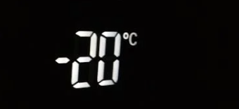

Inom mätningens värld uppstår behovet av att konvertera enheter frekvent, oavsett om du planerar ett gör-det-själv-projekt eller avkodar väderprognoser. Bland de vanligaste konverteringarna finns fot till meter och Fahrenheit till Celsius. Låt oss fördjupa oss i dessa konverteringar och avslöja hemligheten bakom dem.
Fot och meter representerar längder, men de tillhör olika mätsystem. Medan fot vanligtvis används i det imperiska systemet, är meter en del av det metriska systemet. För att överbrygga denna klyfta använder vi konverteringsfaktorer.
En fot är ungefär lika med 0,3048 meter. Denna konverteringsfaktor gör att vi kan växla mellan de två enheterna sömlöst. När du konverterar fot till meter multiplicerar du helt enkelt antalet fot med 0,3048.
Exempel: Konvertera 10 Fot till Meter
10 fot × 0,3048 = 3,048 meter
Nu har du framgångsrikt konverterat fot till meter!

Fahrenheit och Celsius är två temperaturskalor som används över hela världen, men de har olika nollpunkter och intervall.
För att konvertera Fahrenheit till Celsius kan du använda formeln:
C = 5/9 x (F - 32)
där C representerar grader Celsius och F representerar grader Fahrenheit.
Exempel: Konvertera 68°F till Celsius
C = 5/9 x (68 - 32)
C = 5/9 x 36
C = 180/9
C = 20°C
Voila! Du har framgångsrikt konverterat Fahrenheit till Celsius.
Att konvertera fot till meter och Fahrenheit till Celsius kan verka överväldigande till en början, men med rätt kunskap och formler blir det en enkel uppgift. Oavsett om du ger dig ut på ett hemförbättringsprojekt eller planerar för vädret, ger dessa konverteringar dig kraften att navigera mellan olika mätsystem utan ansträngning. Så, gå vidare, omfamna siffrorna och erövra dina konverteringar!